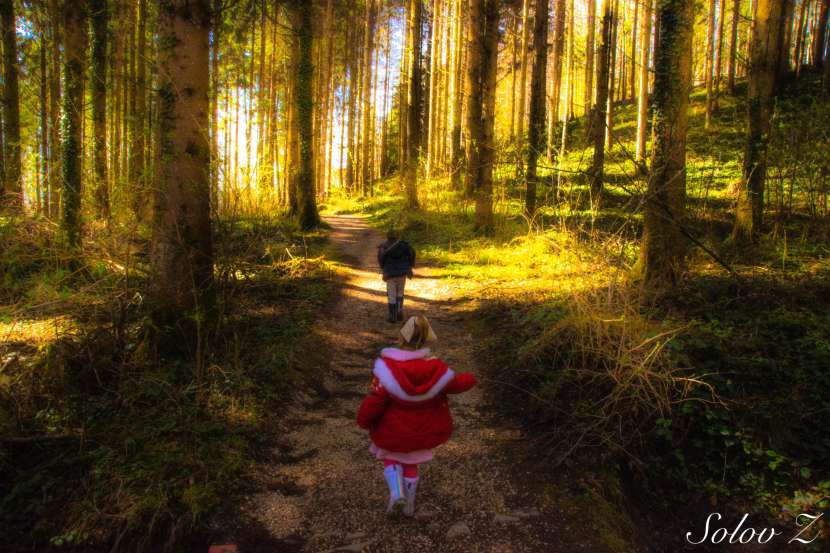
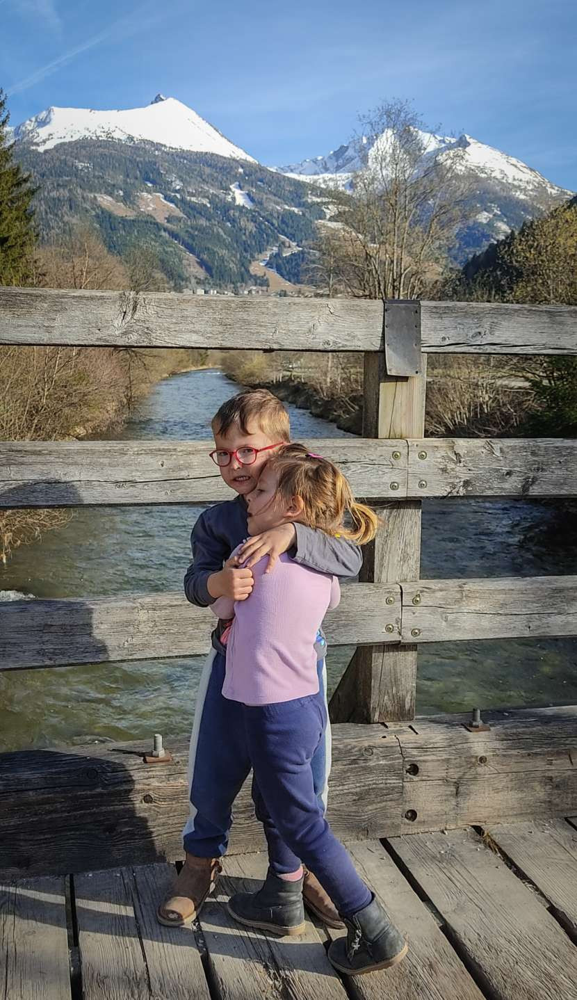
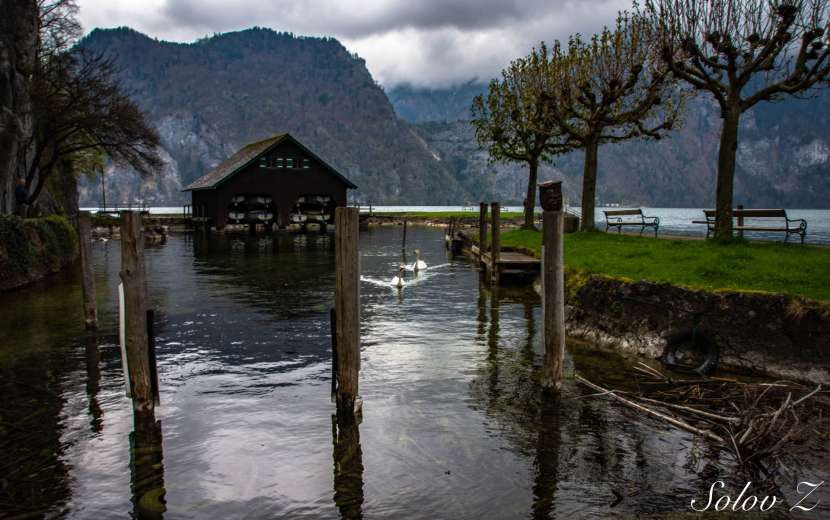

זריחה
באגם מונדסיי
זריחה
באגם מונדסיי
זריחה
באגם מונדסיי
הטיול הראשון שלנו לאוסטריה היה באפריל 2018, אז עם תאומים שרק נולדו והיו בני 4 חודשים, כולם חשבו שהשתגענו אבל זה היה אחד הטיולים המדהימים שעשינו.
בגלל הקורונה, ושנה וחצי בלי טיולים החלטנו שאין מצב שאת חופשת פסח אנחנו מבלים בבית עם הילדים ולכן גם במחיר בידוד בחזור אנחנו טסים.
וככה יצא שבאחד מערבי פברואר חיפשתי טיסות לאוסטריה כי פשוט רצינו לשחזר טיול בקרוואן עם הילדים, שהיום כבר בני 4. מצאתי טיסות במחיר מצחיק של 58 דולר לאדם לוינה, נו מה לא נזמין, אז הזמנו, בידוד או לא בידוד אנחנו נוסעים.
את הקרוואן שכרנו הפעם מחברת indie campers בעיקר מהסיבה שיש להם סניף בוינה, בעוד שלהרבה חברות אין או שההשכרה רק בגרמניה. הסיבה שלא טסנו דרך מינכן היא פשוט הגבלות הקורונה שהיו שם- הבת היתה צריכה להיכנס לבידוד של 5 ימים בעוד שבאוסטריה לא.
חודש אפריל נחשב לתקופת ביניים לטיול באוסטריה, מעין שילוב של חורף וקיץ- הרבה מאתרי הסקי עדיין פתוחים מצד שני לאט לאט גם תיירות הקיץ מתחילה להתעורר, המשמעות- ישנם אתרים שעדיין סגורים לביקור בגלל העונה, ולכן למי שמתכנן טיול באפריל כדאי לבדוק כל אתר לגופו אם הוא פתוח או לא, באופן כללי לא הרגשנו שפספסנו משהו שרצינו כי היה סגור, היו המון אתרים פתוחים, במיוחד ש'נפלנו' על הפסחא- האתרים מלאים במקומיים שמטיילים ויש המון הנחות לילדים קטנים, ככה יצא שברוב האתרים לא שילמנו בכלל עבור הכניסה של הילדים לאתר, מצד שני גם לא היה עומס על תשתיות כלומר תמיד היה מקום בקמפינגים\מסעדות וללא תורים בכלל באטרקציות. בעיני לפחות לטייל באפריל היה מצויין.
מבחינת מזג אויר ולבוש אז כאמור נוסעים לאירופה, וכמו שגם בקיץ יכול להיות גשום וקר, באפריל מזג האויר יכול לנוע משלג לשרב, וכן חווינו קצת מהכל- היו ימים קפואים והיו ימים קיציים. נערכנו בהתאם- לקחנו מעילים חמים כובעים וכפפות לילדים וכן מגפי שלג, יחד עם בגדים דקים יותר ונעליים רגילות- הצלחנו לדחוס הכל ב-2 מזוודות.
קצת על השכרת קראוון ומה זה כולל, נשאלתי הרבה מה העלויות ומה זה כולל, ואנסה להסביר כאן.
עלות הקראון משתנה לפי עונה ומשך ימי השכרה, ככל שיותר ימים המחיר פר יום יוזל טיפה, זה נע בין 60 ל-180 יורו ללילה שוב תלוי עונה, חברה ומשך ימי השכרה. גם דגם הקראון משפיע על המחיר. לכן ההצעה שלי היא פשוט להכנס לגוגל ולחפש השכרת קראוון ביעד שאתם רוצים ובתקופה הרצויה בכדי להתרשם מההיצע והמחיר. טיול קראון זה לא ספונטני, צריך להזמין קראונים מראש לפחות חצי שנה ויותר במקומות עם ביקוש, ובשיא העונה ייתכן ותצטרכו אפילו להזמין מראש חניונים. בנוסף למחיר ההשכרה נטו נכנסות כל מיני תוספות, אם חשבתם שהזמנתם קראון ויש לכם הכל בפנים אז לא, יש חברות הכוללות בהשכרה גם כלי מטבח אבל יש כאלה שלא ולכן תשלום נפרד, סט מצעים- כריות שמיכות ומגבות זה עוד עלות, ציוד ברבקיו, שולחן פיקניק וכסאות עוד עלות, וכו' וכו. לפעמים החזרה מאוחרת של קראון תחייב אתכם בעוד יום השכרה מלא לכן צריך להיות מוכנים.
עלות ממוצעת של לינה בקמפינגים באוסטריה להרכב שלנו- זוג ו2 ילדים מתחת לגיל 5 היתה כ-40 יורו ללילה כולל חיבור לחשמל. כביסה- יש קמפינגים שיש יש שאין, לרוב בגדולים יש מכונת כביסה ומייבש שפועל במטבעות יורו או שניים לכן כדאי שיהיו לכם הרבה כאלה.
הקמפינגים באוסטריה נקיים ומסודרים בכולם יש מקלחת עם מים חמים. אנחנו טיילנו מחוץ לעונה מה שמאוד מוזיל עלויות, הקמפינגים ריקים ככה שלא דאגנו למקום- ההפך היינו צריכים לבדוק מה פתוח כי יש קמפינגים שנסגרים לחורף ונפתחים רק במאי יוני.
שימו לב שמהירות הנסיעה בקראון היא לא מהירות הנסיעה ברכב רגיל, אלא הרבה יותר איטית, וצריך לקחת את זה בחשבון בתכנון זמני נסיעות.
אז הנה הטיול שלנו באוסטריה עם תאומים בני 4 בקראון.
 אגם
מונדסי
אגם
מונדסי
יום
1-
8 לאפריל-
מתחילים
טיסת צהריים של ריינאייר שיצאה בזמן ונחתה בזמן, בשלוש אחר הצהריים בנמל התעופה בוינה. הילדים בהתרגשת שיא, אוספים את המזוודות וניגשים לדוכן להזמין לנו מונית לתחנת איסוף הקראון. נקודת ההשכרה היא באיזור fischament שזה כ-8 קמ מהשדה, בעלות של 28 יורו מגיעים לנקודת ההשכרה של- indie campers, מקבלים את הקראוון החמוד שלנו, דגם אטלאס 5, עלותו כ-1840 יורו לכל התקופה- 11 יום.
אנחנו כבר מנוסים בטיולי קראון ויודעים שביום הראשון לא מתכננים כלום פרט להצטיידות ואכן מעמיסים הכל, פורקים מזוודות, ונוסעים להצטייד באוכל בסניף eurospar הקרוב.
ליד שדה התעופה אין הרבה קמפינגים, הכל במרחק כשעה נסיעה, המליצו לנו בחברה על קמפינג בשם Seecamping Masai Mara שהיה מאוד חביב כי לא רצינו להיכנס לתנועה סמוך לוינה, בדיעבד עדיף קמפינג יותר קרוב לכביש המהיר כדי לצמצם זמני נסיעה לכיוון זלצבורג. כבר באוטו אחרי הקניות הילדים נרדמו ופשוט המשיכו לישון עד אור הבוקר למחרת.
מצטיידים בפירות יער, יאמי
יום 2- 9 לאפריל, נסיעה שלא נגמרת
בוקר סגרירי מקדם את פנינו תחזית מזג האויר לא אופטימית, היום צפויים גשמים ורוחות וקור אימים, מזל שרוב היום נצטרך לבלות בנסיעה להגיע לזלצבורג. התחלנו את הבוקר באיזי, ארוחת בוקר, קפה, טיול סביב לקמפינג שהיה ממש מקסים עם אגמון חביב במרכזו וסביבו ברווזים וקרפדות מה שסיפק לקטנים קצת תעסוקה.
קמפנג מאסי מארה קרפדה חביבה
לקראת תשע אנחנו יוצאים, החלטנו לעבור בסניף OBI בכדי לקנות בלון גז, אפשר להשתמש בבלון הנוסף של ההשכרה אבל המחיר ממש יקר, ב-OBI קונים בלון ב-40 יורו וכל מילוי של הבלון עולה 35 יורו, בעת החזרת הבלון מקבלים חזרה את ה-40 יורו. הסתבר לנו שהקמפינג די רחוק מכביש מהיר ועד שהגענו ל-OBI הקרוב כבר שעת הצהריים הגיעה, עצרנו בסניף BILLA שם יש להם מסעדות לאוכל מהיר כמו שניצל, צ'יפס, נשנשנו וקדימה לדרך.
רציתי לעצור בפארק בדינוזאורים באגורריום- family park agrarium שנפתח היום, אבל עד שהגענו לשם בשעה 3 כבר היה סגור, גם מזג האויר היה נוראי ככה שלא היינו נהנים לטייל שם בחוץ. לכן ממשיכים בנסיעה עד הקמפינג שלנו במונדסי- האגם בצורת הירח באיזור האגמים של זלצבורג, לא היינו שם בטיול הקודם ולכן החלטנו שיהיה נחמד להתחיל עם מקום שטרם ביקרנו בו.
יער חביב ליד פארק אגורריום
הקמפינג היחיד שפתוח הוא-Austria camp mondsee הנמצא ממש על אגם. תכננו לישון שם 2 לילות ולטייל בסביבה. מחנים מול אגם לנוף משגע, מזג האויר התבהר טיפה ולכן משחררים את הילדים לחלץ עצמות ולטייל קצת. עלות הקמפ' ל-2 לילות 84 יורו.
הקמפינג ענק ובקיץ יש שם שפע אטרקציות החל בשחיה באגם, סירות פדלים קייקים נדנדות, למזלנו יש גם גינת שעשועים קטנה ואפילו מסעדונת. המקלחות נקיות ומבריקות, יש מכונת כביסה ומייבש איזה כיף.
מיד החלטנו לאכול ארוחת ערב במסעדה, כי לבשל בקראון זה לא הכי כיף, בכל זאת קצת צפוף וקר מידי לשבת בחוץ, מזמינים מרקים- כי זה הכי מתאים בקור הזה, גלידה לקינוח- כי אין דבר כזה שקר מידי לגלידה. הילדים כלכך התלהבו להתקלח בקמפינגים שכל הגעה לקמפינג התחילה בסיור בשירותים ומקלחות.
הלילה הולך להיות קפוא- מינוס אחת מעלות, לכן אחרי מקלחות מדליקים חימום ולישון.
 אגם
מונדסיי
אגם
מונדסיי
 אגם
מונדסיי
בקמפינג
במונדסיי
אגם
מונדסיי
בקמפינג
במונדסיי
יום 3- 10 לאפריל, ברד ברד שלג שלג
קמנו לבוקר של ברד ופתיתי שלג. כמה תוכניות היו לי ליום הזה, אבל עם ילדים בני 4, לטייל בגשם וברד זה לא כיף בכלל, לכן תוכניות לחוד ומציאות לחוד. ימים כמו אלה הם סיבה טובה לזמן משפחתי בקראון. שיחקנו משחקי קופסא, ציירנו ציורים, בהפוגות טיילנו סביב האגם וחיפשנו ברווזים וברבורים, שיחקנו קצת בגינת השעשועים. וככה העברנו את הבוקר.
בצהריים פגה סבלנותי, אי אפשר לשבת באותו מקום כל היום, אז החלטנו לשנות קצת מיקום ונסענו לעיירה מונדסי.
ליד הטיילת יש חניה גדולה, אפילו לקראון, אז חנינו ממש על הטיילת. הטיילת מקסימה, והכי חשוב יש גינת משחקים ענקית ליד, עם אומגה, נדנדות וטרמפולינה, כמה אושר.
טרמפולינה טיפוסית באוסטריה
אחרי שקפצנו והשתוללנו, והתחממנו כמובן, החלטנו לנצל את מזג האויר החורפי משהו שפקד אותנו, ולאכול שוב במסעדה, נו בכל זאת יורד גשם אז נשב בפנים. המסעדה Seecafe-Mondsee פשוט מושלמת, אוכל טעים מקום חמים ונעים ויש קצת משחקים בפנים לילדים.
שבעים טיילנו עוד קצת בטיילת וכאשר שוב התחיל הברד חזרנו לקמפינג. ככה העברנו את היום, בשוטטות במקום, יש גם ימים כאלה בטיול, העיקר הביחד.
אין כמו גלידה, גם באפס מעלות
יום 4- 11 לאפריל, יום מהאגדות
היום תכלס אפשר להגיד שסוף סוף התחלנו את הטיול. שש וחצי בבוקר, הילדה מתעוררת, אני שולחת את בעלי להעסיק אותם בתקווה לגנוב עוד כמה דקות שינה, באינסטינקט מרימה את התריס של החלון ו… ואו… זריחה עוצרת נשימה, שמש זהובה מציצה מבעד לעננים, ערפילים על פני האגם, שמיים כחולים מבצבצים, מחזה פשוט מדהים.
זרחיה
במונדסיי
זריחה
במונדסיי
 זריחה
במונדסיי
זריחה
במונדסיי
 זריחה
במונסדיי
זריחה
במונסדיי
מיד אנחנו שמים מעילים חמים ורצים החוצה עם המצלמות לנסות לתפוס את היופי הזה מבעד לעדשה, הילדים אגב נהנים בינתיים מסרט בטאבלט, מה אכפת להם שההורים המשוגעים שלהם יצאו לאפס מעלות קור בגלל איזה נוף.
אין כמו בוסט כזה של אדרנלין להתחיל את היום, ולכן מיד אחרי ארוחת הבוקר יוצאים לנקודה הראשונה שלנו.
בתכנון אתמול היינו אמורים לנסוע לפארק השעשועים פאנטסיאניה, אבל לאור מזג האויר נדחה את זה לסוף הטיול, היום צפויה לנו שמש וחבל לבזבז אותה בלונה פארק שאפשר וכדאי לטייל בטבע.
נפרדים מהקמפינג המקסים במונדסי ונוסעים לכיוון אגם אטרסי הסמוך שם נמצא המסלול המדובר- Unterach Märchenwald הייתי אומרת שזה מסלול חובה לכל מטייל עם ילדים עד גיל 6, מדובר בשביל קליל שעובר ביער, עם נוף משגע לאגם, אבל השוס של המקום זה האגדות. לאורך המסלול מפוזרים מייצגים מאגדות- טחנת הקמח עם החתול במגפיים על הגג, הבית של שלגיה, המגדל של רפונזל, מכשפה ועמי ותמי או הנזל וגרטל במקומית. אלו לא רק מייצגים, כל מיצג מאפשר משחק כלשהו, למשל ליד שלגיה יש באר מים שממש אפשר לשאוב ממנה את המים, בבית של שלגיה אפשר להכנס ולשחק, באמצע המסלול יש גינת משחקים חביבה עם נדנדות, אומגה, ועוד מתקנים. בשורה התחתונה אחרי 3 שעות בקושי הצלחנו לגרור אותם משם.
יער
האגדות אטרזי
יער
האגדות

יער
האגדו
 יער
האגדות
הבאר
ביער באגדות
יער
האגדות
הבאר
ביער באגדות
המסלול הוא קווי ככה שניתן להתחיל מכל צד ולחזור חזרה. למי שלא עם קראון יש מסעדה ממש טובה במעלה ההר אולם עם קראון החלטנו שלא להסתכן ולנסוע בכביש הצר, שאמנם עביר לגמרי לכל רכב רגיל, אולם בעלי קצת חשש מלנסוע בכביש צר במעלה ההר עם המשאית שלנו.
במקום המסעדה ההיא, מצאנו מסעדה חביבה על גדות המונדסי- Gasthof See. שבעים ומרוצים התחלנו בנסיעה לכיוון התחנה הבאה שלנו- העיירה פלכאו.
יום כזה יפה, שמש, שמיים כחולים, חמים ונעים בחוץ, ולכן החלטנו לעצור במפלי גולינג, היינו שם לפני 4 שנים והמקום מקסים. חנינו בחניה הגדולה ליד הכניסה, בעלי הלך לשנצנצ ואני לקחתי את הקטנים איתי למסלול, זכרתי שהוא ממש קצר ולא תכננתי לעלות איתם למעלה אלא רק להגיע למפל, אז יצאנו לדרך, רק אנחנו ופעמוני הכנסיה שצלצלו ברקע. בגדול המקום סגור ואין דמי כניסה בעונה זו, אבל אפשר להכנס, אין גדרות וככה מלא אוסטרים נכנסו גם כן. צעידה קצרצרה ואנחנו מול המפל העוצמתי והמשגע, ניתן לעלות למעלה במעלה ההר או לחצות בגשר שבתחילת המסלול לגדה השניה להתקרב יותר אבל לנו זה מספיק, מרוצים מהטיולון הקטן שלנו חזרנו להמשך הנסיעה לעיירה פלכאו.
מפל גולינג הולכים למפל
תוך 45 דקות הגענו, הצטיידנו בקניות בסניף המאוד ריק של LIDL והמשכנו לקמפינג שלנו- passrucker camping, מקום חביב ונחמד לא רחוק מפלכאו, יש גם שם כמה מתקנים לילדים והר שלג שפולס מהכבישים, והנה הצוציקים מאושרים, מטפסים על ההר וזורקים שלג אחד על השני. התשלום בקמפינג הזה רק במזומן.
קופצים על הר שלג
גם כאן החלטנו להישאר 2 לילות, המקום מצוחצח ומבריק- עבר בהצלחה את סיור השירוקלחת של הילדים.
הפעם אנחנו מאלתרים ארוחת ערב בקמפינג כי אחרי כל היום בטבע והנהיגה אנחנו פשוט עייפים מידי.
 החתול
במגפיים יער האגדות אטרסי
החתול
במגפיים יער האגדות אטרסי
יום
5-
12 לאפריל,
אטרקציות
חורף ביום קיץ חם
אמצע הלילה פתאום אזעקה מעירה אותנו, אנחנו מבולבלים ולא מבינים מה קורה, סביבנו דממה, כולם ישנים הכל רגוע, טוב טילים כנראה לא ינחתו עלינו בזה הרגע, מעיון בגוגל עולה שככה מזעיקים כיבוי אש, אזעקה עולה ויורדת 3 פעמים, התקף לב עשו לנו האוסטרים האלה. רק נרדמנו ורעשי זיקוקים מעירים אותנו שנית, איזה לילה. למזלנו זה היה הלילה היחיד שחווינו את זה בטיול ועד היום אין לנו מושג מה גרם לכל האזעקות האלה.
גם היום יש יום יפה שימשי ונהדר, 21 מעלות אפילו- ממש קיץ.
תכננו לעשות את מגלשת ההרים לאקי פליצר, בין היחידות שפתוחות בעונה זו. אולם לפי גוגל היא נפתחת רק ב-12 בצהריים, צריך לעשות משהו עד אז.
אחרי ארוחת בוקר סטייל קראוון, התחלנו את היום שלנו בפארק האיילים- freizeitpark-untertauern, מדובר בפארק חביב למדי, הכניסה חופשית, אפשר להשאיר תרומה לשימור ותחזוקת המקום. במקום יש מתקנים לילדים, חיות משק כמו פרות, עיזים ברווזים, בריכות דגים שבקיץ אפשר לדוג ולשוט בסירת פדאלים וכמובן איילים שמטיילים חופשי בטבע. בעונה זו יש עדיין שלג אז הצוציקים שלנו נהנים מעוד קצת משחק בשלג, משחקים במתקנים, רודפים אחרי ברווזים ומלטפים ארנבונים שמתרוצצים שם חופשי. בקיץ לדעתי המקום ממש שווה, עכשיו הרושם הוא די מעורב, החיות לא כלכך נגישות והכל די מכוסה בשלג, אבל אנחנו מעבירים בכיף את הזמן עד 12 שהלאקי פליצר נפתחת.
פארק האיילים עם הארנב פארק האיילים האיילים בפארק
לקראת 12 הגענו לאיזור הלאקי פליצר, ליד יש גם רכבל שעולה למעלה למי שעושה סקי או סתם רוצה לשחק בשלג, ליד המתחם של הפליצר יש פארק מתנפחים ענקי ומסעדות. מזג האוויר חם עד כדי קיץ.
אנחנו קונים 4 כרטיסים מתחלקים- כל הורה עם ילד, מותר מעל גיל 3 בליווי מבוגר, ומתיישבים במגלשה שעושה את דרכה במעלה ההר, בסיום העליה מצפה לנו ירידה מהירה ממש למטה, ממש כמו רכבת הרים, יש במגלשה מוט שניתן להאט ולבלום איתו, אבל מסתבר שהצוציקים אוהבים מהר ככה שאנחנו טסים במורד ההר.
כל החויה נמשכת כ-10 דקות ולא זולה בכלל, אבל האושר על פני הצוציקים שווה כל יורו.
משם התיישבנו לאכול צהריים במסעדת פאסט פוד שנמצאת ממש מול הפליצר, שחררנו את הצוציקים לרוץ חופשי בין המתנפחים עד שהאוכל יהיה מוכן, לאחר מכן הם שוב רצו למתנפחים ואז התחננו לעוד סיבוב בפליצר, גם לנו היה כלכך כיף שזרמנו על עוד סיבוב.
השעה כבר שלוש, והחלטנו לעשות שנצ בקראון, כלכך חם בחוץ שפתחנו את כל החלונות לאוורור, אחרי מנוחה קצרה המשכנו לתרמה אמדה, המרחצאות הנמצאים במרחק של 5 דקות משם.
גם בתרמה הכניסה לילדים היתה חינם בגלל הפסחא, שילמנו על כרטיס של שעתיים, אם רוצים להאריך את זמן השהיה, אין מה לדאוג, כשתרצו לצאת יש מכונה ליד שער היציאה, בה מעבירים את הכרטיס ואם חרגתם אז תשלמו שם. שעתיים מספיקים לנו לגמרי. המקום גדול מאוד, בטח בקיץ ממש הומה, עכשיו די מלא אבל לא עמוס. יש 3 מגלשות מים שנראות מעולה אבל לילדים גדולים 6-10. יש מגלשה לקטנטנים ליד בריכת הפעוטות- שם בילינו את רוב הזמן, יש בריכת שחיה אולימפית, יש בריכת גלים, יש בריכה מקורה ויש בריכה בחוץ- ובה יש כל מיני הפתעות כמו מערבולת מים, סילוני מים שיוצאים, יש גם בריכות חמות, בקיצור חוויה של ממש. אחרי שנהננו ממרבית הבריכות הילדים כבר זוחלים לקראון אחרי יום עמוס פעילויות.
אבל לא סיימנו להתיש אותם, כי החלטנו לשוטט בעיירה ברגל ולחפש מסעדה לארוחת ערב, ומצאנו אחת במרחק קילומטר מהקמפינג- Restaurant Römerkeller, מסכנים הקטנים בקושי הלכו כבר מעייפות, אבל האוכל היה מצויין, הזמנו פיצה וקצת מנות הבית, הצוציקים קיבלו דפים ועפרונות ציור- בכלל ברוב המסעדות יש עפרונות ודפים לצביעה ופינת משחקים לילדים, ממש נחמד. שבעים ומרוצים צעדנו חזרה לקמפינג למקלחות ולישון
ארנב בפארק האיילים
יום 6- 13 לאפריל- עולים גבוה
הבטחתי לילדים עוד בארץ שנעלה על רכבל ונראה הרבה שלג, לכן תכננתי לנסוע לבאד גסטיין, לעלות שם ברכבל, לטייל בעיירה ולעבור באגם ג'ארגסיי.
עוד יום יפה מקדם את פנינו, אנחנו עוזבים את הקמפינג הנחמד הזה ונוסעים לכיוון באד גסטיין. נסיעה של שעה ורבע עוברת בנעימים, הצוציקים נורא מתלהבים מהמנהרות בדרך.
הגענו לרכבל stubnerkogel ולגשר התלוי שנמצא למעלה, התחנה נמצאת ממש מול המרחצאות ויש שפע חניה. קונים כרטיסים בעלות של 60 יורו, שוב הילדים נכנסו חינם. ומתחילים בעיה תלולה מאוד עד לפסגה, מהר מאוד הנוף הירוק מתחלף בשלג והמוני מקומיים שנהנים מסקי.
עשיתי טעות פאטאלית בטיול ולא לקחתי לקטנים משקפי שמש, אל פשוט אל תעלו לשלג בלי משקפי שמש.
איך שירדנו הרם ראו לבן ושלג והחליטו שדי רוצים למטה. בשיכנועים הצלחנו להגיע לנקודת התצפית היפה, ולזרוק כמה כדורי שלג. משם הלכנו לשתות שוקו חם במסעדה שבמקום, המלצרית המקסימה אפילו ארגנה לנו עוגת תפוחים וגלידת שוקולד שלא היתה בתפריט- מסתבר חבר שלה הוא בטבח, איזה פינוקים לצוציקים. היום כלכך חם שאפילו על ההר לא צריך מעיל, העיקר שהלבשתי אותם עם כובעים וכפפות גם. אחרי מנת הסוכר שלהם הם מוכנים לצאת לסיבוב על הגשר התלוי, הגשר תלוי מעל תהום, מחזה מדמים כשמסביב הכל מושלג, אז אחרי סיבוב קצר החלטנו שאפשר לרדת.
על
ההר
מסונוורים
משחקים
בשלג
 הגשר
התלוי
הגשר
התלוי
הגשר
התלוי
הגשר
התלוי
ירדנו מההר השעה היתה שתיים, התלבטנו ממש מה לעשות, אנחנו צריכים לקנות אוכל אז קפצנו ליורוספאר הקרוב, מרחצאות- היינו אתמול אז פחות רצינו, אז החלטנו לטייל קצת בעיירה לראות את המפל, וברגע שהתחלנו ללכת התחילו התבכיינויות, לא בא לי, קשה לי וכו כו, מהר מאוד הבנו לשטייל רגלית בעיירה לא יהיה מוצלח לא לנו ולא להם, התלבטנו אם לנסוע לאגם יאגרסיי- שעה ורבע נסיעה, נגיע רק בארבע ו… לא בטוחה כמה הילדים יזרמו, הם די במצב רוח קרבי היום. בסוף החלטנו לנסוע לכיוון ואם נראה קמפינג יפה נעצור, וזה בדיוק מה שקרה.
עצרנו בקמפינג מקסים- Bertahof Camping, במקום יש מסעדה גדולה שלא פעלה היום בגלל אירוע פרטי של בעלי הקמפינג, יש אגמון קטן, ארגז חול מלא צעצועים, שירוקלחת מדהימים נוף משגע, מה עוד צריך.
ההרים המושלגים של באד גסטיין
טיילנו קצת ברגל בסביבה ליד אגם גדול יותר- Gasteiner Badesee שבקיץ משמש אגם שחיה אולם עכשיו סגור ומגודר, חזרו לקמפינג והילדים השתוללו על המתקנים- נדנדות, אומגה, קרוסלות, טרמפולינות ארגז חול- גן עדן בשבילם. אנחנו עשינו על אש, איך לא ביום כזה יפה, ובעיקר ישבנו בחוץ ופשוט נחנו, לפעמים גם לשבת ברוגע בטבע שווה יותר מעוד נסיעה ואגם שנראה, נשאיר גם לפעם הבאה.
השביל
סביב האגם

 ארגז
חול בקמפינג
ארגז
חול בקמפינג
יום 7- 14 לאפריל- מלימונים עושים לימונדה
בוקר יפה מקדם את פנינו, מיד אחרי ארוחת הבוקר שולחים את הצוציקים לשחק בארגז החול בזמן שאנחנו אורזים ומסדרים את הקראון. התכנון להיום זה לנסוע להאלשטאט, משהו כמו שעה וחצי נסיעה, רציתי לעשות את קניון למאר שבדרך, אבל הוא נפתח רק ב-16 לאפריל- עוד יומיים אז כבר לא נספיק בטיול הזה.
אנחנו לוקחים את הבוקר באיזי, רוצים לספוג כמה שיותר שמש לפני שנכנס לאוטו וניסע, רק אחרי שהצוציקים ממצים את גינת השעשועים אנחנו מתחילים בנסיעה.
התלבטנו אם לעצור באגם גוסאו הקפוא לגמרי אבל החלטנו שאת היום היפה עדיף לנצל בעיירה, היינו שם לפני 4 שנים והיה ממש נחמד. בעיירה יש רק קמפינג אחד Campingplatz Klausner-Höll המשמש גם כחניה לקרוואנים, היינו שם לפני 4 שנים והיה מצויין אבל הביקורות על המקום נוראיות בעיקר בגלל הבעלים של המקום, לצערנו הפעם חווינו זאת על בשרנו. הגענו בשעה 12 והקמפינג היה סגור, בחוץ היה שלט עם מס' טלפון, בזמן שנכנסתי לחפש את הבעלים בעלי פשוט נכנס בשער עם הקראון לחכות לי, פתאום יוצא איש מאיזה מחסן וצועק על בעלי, הוא מסביר לו שאני מחפשת אותו כדי לשלם ולהסדיר את השהות, כשאני מצאתי אותו במחסן האיש פשוט צועק, כשאני מנסה להבין על מה הוא כועס, ועד היום לא מצליחה, פשוט הסתובבנו ונסענו משם, ממש חוויה לא נעימה. מקריאה בביקורות מסתבר שאנחנו לא היחידים לקבל קבלת פנים כזאת, לצערי ככה זה כשיש מונופול על חניון היות ואין חניונים אחרים לקראון בעיירה, צריך לחנות בעיירה הסמוכה ומשם אוטובוס או ברגל מה שאנחנו לא התכוננו אליו כלל.
טוב, מלימון נעשה לימונדה, ונסענו לסט גיליגן במקום- זה היה היעד אחרי הלשטאט. אחרי עוד 40 דקות הגענו לחניון האוטובוסים של סט. גיליגן שנמצא ממש ליד הרכבל, זה מקום החניה המושלם לקראונים כי הוא גדול, החניון של הרכבל לא בטוחה שקראון יכנס בו. החלטנו לעלות ברכבל היות והיום יפה וממש חייב לטייל בטבע בטח אחרי שעתיים נסיעה, קנינו כרטיסים בעלות של 60 יורו, הילדים שוב חינם. הרכבל עבר שיפוץ רציני, לפני 4 שנים היו שם קרונות ישנים מיושנים שעכשיו עומדים כתצוגה בתחנה, נסיעה נחמדה של 10 דקות ואנחנו על הפסגה המושלגת, תענוג, מסביב נשקפים אגם וולפגנג ואגם מונדסי.
הנוף מרכבל סט. גיל הולכים בשלג הנוף מהצד השני של ההר
החלטנו לעשות הליכה קצרה, למרות שיש שלג לא מפריע לנו כי הוא לא מחליק, וככה בנחת הגענו לצד השני של ההר, נוף מהפנט של הרים מושלגים יערות ואגמים, התיישבנו לפיקניק פירות יער וחיפוש מקלות. היינו נשארים עוד אבל בשעה ארבע יורד הקרון האחרון והשעה כבר שלוש וחצי, בחוסר חשק עוזבים את הפינה שלנו וצועדים שוב בשלג לרכבל, היה מושלם.
כשירדנו רצינו למצוא מסעדה בסט. גיליגן אבל העיירה די שוממת ככה שבמקום קינחנו בגינת שעשועים נחמדה על הטיילת ונסענו לקמפינג שהיינו בו לפני 4 שנים- Paradies-Camping Wolfgangsee Birkenstrand מקום נקי מסודר ויחס מדהים מצד הבעלים של המקום. בגלל הפסחא הקמפינג ממש מלא, וגם כאן אנחנו ישר מזמינים 2 לילות כדי לטייל בסביבה בעלות של 85 יורו. בזמן שאני מאלתרת ארוחת ערב הצויציקים מתרוצצים בדשא, מאוחר יותר החלטנו להיות אמיצים ולטבול רגליים באגם הקפוא, לא היינו האמיצים היחידים, זוג צעירים אוסטרים נכנס לשחות.
וככה הסתיים לו עוד יום, והנה מלימון עשינו לימונדה ולמרות החוויה הלא נעימה נהננו מאוד.
טובלים רגליים באגם וולפגנג
יום 8- 15 לאפריל- שייט באגם
זהו, נגמרה ההקצבה של ימים יפים ושמשיים, היום כבר יורד גשם, לא מבול אלא יותר מעין drizzle כזה. בגלל שינוי התוכנית בהלשטאט, הרווחנו עוד יום באיזור וולפגנג, לכן החלטנו לנסות את השייט באגם, גם ככה גשום מידי לטייל בחוץ.
המעבורת הראשונה יוצאת בעשר ועשרים בבוקר, עד שהתארגנו השעה כבר תשע וחצי ויש לנו עוד נסיעה, חניה והגעה למעגן. אפשר להגיד שממש רצנו ברחבי העיירה, הגענו על הקשקש. כרטיסים ניתן להזמין באינטרנט אבל זה לא נתן הנחה לילדים, גילינו את זה כשקנינו באוניה עצמה, שילמנו 35 יורו בעוד שאם היינו מזמינים באתר היינו משלמים 52.
ההפלגה עצמה אורכת כ-45 דקות עד לתחנת wolfgang market אליה הגענו ב-11. מזג האוויר ממש מזכיר את נורבגיה והנוף מההפלגה ממש מזכיר פיורד טיפוסי.
הנה כמה תמונות מהשייט;
אגם
וולפגנג
אגם
וולפגנג
אגם
וולפגנג
 אגם
וולפגנג
אגם
וולפגנג
 אגם
וולפגנג
העיירה
סט.
וולפגנג
אגם
וולפגנג
העיירה
סט.
וולפגנג
יש לנו שעה וחצי להסתובב בעיירה, המעבורת חזרה יוצאת ב-12 וחצי, בכוונה לא קנינו כרטיס חזור כי אם נרצה לטייל יותר אז לא נהיה מוגבלים, יש מעבורת על שעה וחצי.
העיירה ממש מקסימה, טיילנו בין הסמטאות, אכלנו שם את השטרודל הכי הכי טעים, ישבנו על המזח, קנינו מזכרות וככה העברנו שעה וחצי של שוטטות. אם ילדים קטנים שעה וחצי שיטוט בעיירה זה הישג ככה שמרוצים עלינו על המעבורת של 12 וחצי חזרה לסט. גיליגן.
מזח חמוד בסט. וולפגנג העיירה סט. וולפגנג
פינקנו את הצוציקים בזמן משחק בגינת השעשועים שבסט. גיליגן, מזג האוויר השתפר ממש ואפילו השמש ביצבצה לה מידי פעם. אחרכך החלטנו לעשות פיקניק על גדת האגם אז הצטיידנו בקניות בסניף בילה והתיישבנו לפיקניקון על שפת האגם.
מבסוטים בגינת שעשועים בסט. גיליגן
בשעה שלוש חזרנו לקמפינג לשנצנוצ, היום החלטנו לאכול ארוחת ערב במסעדה ליד הקמפינג- Seegasthof Gamsjaga מסעדה חביבה עם נוף משגע על האגם, שירות מצויין, ומיץ פירות יער טבעי ואלוהי. למסעדה הלכנו ברגל ועצרנו לרוץ קצת באחו שלידה.
עוד יום מושלם הגיע לקיצו.
האחו ליד הקמפינג
יום 9- 16 לאפריל- פארק שעשועים
קמנו לעוד יום סגרירי וגשום, היום עוזבים את הקמפינג הזה ונוסעים לפארק השעשועים פנטזיאנה- הבטחנו לצוציקים פארק שעשועים, צריך לקיים. הפארק נמצא כעשרים דקות נסיעה מהקמפינג, עלות כניסה לא זולה בכלל- 80 יורו לארבעתינו, למזלנו המקום ממש לא עמוס, אין תורים בכלל.
המקום אינו גדול ויש שם מספר מתחמים, החל ממכוניות מתנגשות, רכבת קרוסלות, ועד לכמה רכבות הרים מעט יותר מפחידות, מאוד מזכיר את הלונה פארק קר קטן יותר. יש במקום גם מסעדות fast food, וג'ימבורי.
במזג האוויר זה יוצא לנו בילוי מושלם, כשמתחיל גשם נכנסים למתקן מקורה. החסרון של המקום זה שהוא לא מתאים לבני נוער לדעתי גג עד גיל 8-9. הצוציקים שלנו נהנו בטירוף, נראה לי עלינו על כל המתקנים המיועדים לגילם.
פאנטסיאניה
וככה אחרי בילוי של כ-5 שעות במקום אנחנו נוסעים לכיוון אגם טראונסיי והעיירה גמונדן. מחיפוש בגוגל ובאפליקצית park4night שהשתמשנו בה רבות בטיול ראינו שיש רק 2 קמפינגים באיזור, אבל כבכל מקרה העדפנו להתקדם לשם בכדי לצמצם את הנסיעה לוינה אחרכך.
הקמפינג הראשי שליד גמונדן סגור, אז נסענו לקמפינג המרוחק יותר, שלא באמת נפתח עדיין והוא די בהזנחה כרגע, אבל היה סביר להעביר את הלילה, השירותים היו נקיים ממש ומקלחת עשינו דוש בקראון עצמו. המקום נקרא- Strand - Camping Traunkirchen, בעונה יש לו פוטנציאל של ממש בגלל חוף האגם והנוף היפה.
אגם טראונסיי
מזג האוויר ממש קפוא אבל בכל זאת החלטנו לנסוע לטייל קצת ולאכול במסעדה שהומלצה- Klosterstube בעיירה Traunkirchen. חנינו ליד הנמל בחניון בתשלום, הנוף משגע ממש מזכיר את הפיורדים של נורבגיה, החלטנו לטייל טיפה בטיילת למרות הקיפאון, והנה ברבור החליט לראות אם יש לנו משהו טעים להציע לו.
אגם טראונסיי  ברבורים באגם אגם טראונסיי
כמובן שגם כאן יש גינת משחקים קטנה אז כצוציקים שוב מבסוטים לפרוק קצת אנרגיה, לא הספיק להם 5 שעות בפארק שעשועים.
הגענו למסעדה Klosterstube , שהומלצה בקבוצת ווטסאפ של הטיול ומה אני אגיד, פשוט ואו. המקום לא נראה כזה מטורף, אפילו די בסיסי, אבל המנות, אוי המנות, טעים כלכך, והיחס לקטנים פשוט מושלם, זו היתה המסעדה הראשונה שכולנו ממש נהננו, כולל הצוציקים.
מסתבר שהיום יש את מיסת חג הפסחא, כשאנחנו יוצאים אנו רואים עשרות מתפללים עושים דרכם לכנסיה שליד, זה אולי מסביר למה המסעדה לא היתה מלאה בכלל.
חוזרים לקמפינג, הילדים ישנים, אנחנו יושבים ונחים ופתאום רואים את הירח המלא שמציץ מהעננים ומשתקף באגם, איזה מחזה מדהים, אולם לצערי בלי חצובה לא הצלחתי לצלם את המחזה.
ברבור באגם טראונסיי
יום 10- 17 לאפריל- פנינה שנקראת גרונברג
היום שוב אנחנו זוכים ליום שמש, אמנם בחוץ קפוא, רק 5 מעלות אבל השמש מחממת, בעיקר את הנשמה.
היום הוא בעצם היום האחרון שלנו לטייל, מחר יום אריך בדרכים. כשתכננתי את הטיול חיפשתי מקום לעצירה בדרך לוינה וראיתי את האגם, מקירוב בגוגל ראיתי מסלול שנקרא- tree top walk שנשמע ממש מעניין אז חקרתי קצת וההגעה אליו היא דרך רכבל גרונברג, בפסגה יש כמה אטרקציות כמו מגלשת הרים, פארק שעשועים קטן, מסעדה, ושפע מסלולי הליכה, בקיץ יש גם מצנחי רחיפה, ממש גן עדן.
אחרי ארוחת בוקר קראוון סטייל יצאנו לדרך. נסענו דרך העיירה גמונדן, העיירה הכי גדולה שעברנו בה בטיול הזה, חנינו ממש מתחת לרכבל בעלות של 6 יורו ועלינו למעלה, גם הפעם לא שילמנו על הילדים בגלל הפסחא ויצא לנו מחיר ש 56 יורו.
רכבל גרונברג
עלייה קצרה עם נוף מטורף של האגם ואנחנו על הפסגה, אמנם יש שמש אבל קיפאון. הילדים מיד רצים לשחק בגינת המשחקים המושקעת, לגילם זה נראה ממש כמו פארק חבלים, מתחממים קצת, מצטלמים בנוף ולמסלול. אגב קניתי כבר כרטיס שמשלב את הרכבל עם השביל. הסיפור מאחורי השביל שזה פרוייקט אקולוגי בכמה ערים בעולם, מדובר בשביל הליכה יפיפה בין צמרות העצים עם נוף משגע, בכל מקום הסבר על החיות המקומיות והצמחיה, מאוד אינטראקטיבי וידידותי לילדים, השביל מוביל בסוף למגדל עגול ענקי שנראה כמו רב קומות מעל העצים והשוס הוא מגלשה מלמעלה ועד למטה.
הנוף מלמעלה- אגם טראונסיי שביל הצמרות שביל הצמרות מגדל הצמרות והמגלשה שבפנים
הילדים ממש נהנים מהמסלול, בדרך יש גשרונים, מכשולים קלים ופתאום מגיח שפן הפסחא לחלק שוקולדים, זהו, הילדים מתמוגגים מאושר.
כשהגענו למבנה הילדים מיד דרשו את המגלשה, למרות שזה נורא גבוה וכאן נכונה לנו הפתעה לא נעימה, המגלשה בעלות 2 יורו, אין בעיה עם המחיר הבעיה שאין לנו מטבעות כלל, מלמטה ראינו מפעיל אז החלטנו בכל זאת לעלות אולי יש לו לפרוט לנו או אשראי. הגענו לפסגה, נוף משגע אבל קפוא, קפא לי האף תרתי משמע. לצערנו אין אשראי או יכולת לקנות כרטיס, חייב מטבעות- לתשומת לבכם. המפעיל ראה את האכזבה של הקטנים ופשוט נתן לנו להיכנס לסיבוב, הילדים למדו שיש גם אנשים טובים באוסטריה, הודנו לו מקרב לב והתגלשנו, איזה טירוף, מתיישבים על מזרן כזה שלוקחים מלמטה ומחליקים כמה מגובה של 6 קומות עד למטה, מטורף פשוט.
כשירדנו קצת הצטערנו שלא נערכנו למסלול כי יש מסלול ממש נחמד עד לאגם שנמשך כשעה וקצת לכיוון, ניאלף להשאירו לפעם הבאה.
אנחנו קופאים, אבל היום כלכך יפה שלא בא לנו עדיין ללכת, אז קפצנו למסעדה לשוקו חם ואפלשטרודל. הילדים בינתיים סיימו את השוקו ורצו לשחק בגן השעשועים, באמת מקום מקסים פשוט.
שוקו חם מול הנוף הנוף על העיירה גמונדן גינת השעשועים
כשהתחלנו בצעידה חזרה ראינו שמגלשת ההרים פתוחה, בגלל חופשת הפסחא פתחו למרות שבעונה זו עדיין סגור, נו מה לא נעשה סיבוב, מיד קופצים על ההזדמנות ודוהרים במורד ההר.
אחרי כל הפעילות האקסטרים היום יורדים למטה לחניה, היום יפה, התחמם ממש ולא בא לנו עדיין לנסוע אז החלטנו לטייל בטיילת היפה של גמונדן, ההליכה מהרכבל עד מרכז העיר לא ארוכה, בערך חצי שעה בקצב ילדים בני 4, אמנם בהלוך לקח לנו מלא זמן כי טיילנו דרך הטיילת של האגם שהיא מקסימה ממש אז עצרנו בכל כמה דקות לצילום, משחק בארגז חול, להאכיל ברבורים עם פרחים ומה לא.
הברבור
אוהב פרחים
מזח
במונדן
גמונדן
 הטיילת
בגמונדן
הטיילת
בגמונדן
גם בגמונדן יש שייט באגם, חבל שלא נערכנו לזה, הייתי בשמחה קופצת שוב לעיירה שהיינו אתמול לטיול קצר באור שמש.
שייט בגמונדן גמונדן
אז אחרי ארוחת צהריים מאוחרת של הוט דוג וקינוח גלידה, שכמיצינו את העיירה, בכל זאת טיילנו זה מתשע בבוקר ועד עכשיו שהשעה כבר חמש, הגיע הזמן לנסוע לקמפינג.
החלטנו לישון בקמפינג קטן באגם אאוסי, שנמצא ליד העיר לינז, פשוט כי זה מקצר לנו את הנסיעה למחר.
האגם אאוסי הוא אגם קטן וחביב ועיקר הפרסום שלו הוא ספורט המים המגוון שיש שם בחודשי הקיץ. הקמפינג חביב אם כי שומם בעונה זו, אנחנו מטיילים קצת סביב האגם אוכלים ארוחת ערב ולישון, הילדים ממש תשושים מיום שלם בחוץ.
אגם טראונסיי מגרונברג
יום 11- 18 לאפריל- בדרכי הדנובה
עוד יום אפרורי, היום יש לנו יום שלם בנסיעה אז אנחנו לא ממהרים, אוכלים בניחותא, מסיימים את רוב הדברים במקרר כי מחר כבר מחזירים את הקראון. עושים עוד טיול סביב האגם, בשעה זו רק אנחנו שם, הילדים משחקים קצת, זורקים אבנים לאגם ובשעה עשר יוצאים לדרך.
אגם
אאוסי
 אגם
אאוסי
אגם
אאוסי
מטיפים בקבוצת הווטסאפ עולה שכדאי לעצור בכמב טירות באיזור עמק הוכאו ולכן החלטנו לנסות ולנסוע לשם, לא כי טירות מעניין ילדים בני 4, אבל כדי שנוכל לעשות הפסקה מהנסיעה.
מעיון באינטרנט הטירה- Burgruine Aggstein נראתה מעניינת ממש, קראתי גם שבמקום יש 2 חניות, למטה ומשם טיפוס למעלה שאינו בא בחשבון עם הילדים, ויש גם חניה ממש ליד הטירה, נשמע מושלם.
נסיעה על כביש מהיר עד מלק, ושם ירדנו לכביש שלאורך הדנובה, נוף משגע אם כי היום ממש סגרירי. לא עצרנו במלק כי פשוט לא רצינו להסתבך עם חניית קראון בעיירה. הגענו לטירה, החניון למטה אכן גדול אבל אין סיכוי ללכת ברגל, זה לפחות 40 דקות הליכה ועוד צריך לחזור. המשכנו עם הכביש לחניון למעלה רק כדי לגלות שהוא לא עביר כלל לקראון, הכביש צר ובשיפוע, ואם מגיע רכב ממול אין לאין לזוז, אוף חבל.
חוזרים לחניון לעצירת נשנושים ואני בינתיים מחפשת חלופות, והנה המלצה על טירה בעיירה שפיץ הסמוכה, מושלם, שמה גוגל ורואה שזה חצי שעה נסיעה, קצת נדלקה לי נורה אדומה כי לפי המפה זה ממש ליד, טוב אולי פקק או משהו, התחלנו לנסוע, והנה העיירה שפיץ והטירה בגדה השניה של הנהר רק מה גשר אין. גוגל מנווט אותנו למעבורת שחוצה את הנהר, שאם הקראון יעלה עליה נשקע בטוח.
 הטירה
בשפיץ
הטירה
בשפיץ
אנחנו ממשיכים בנסיעה לאורך הדנובה, חולפים על פני כפרים מקסימים אבל לא עוצרים פשוט כי אין איפה לעצור לקראון, ככה נהגנו עד שהגענו לקרמס.
מסתבר שהגשר הקרוב הוא בעיירה קרמס, בעלי לא מוכן לנסוע לאורך הגדה השניה עד לשפיץ, נסיעה של כחצי שעה, ולכם חונים בקרמס ומחפשים לנו מסעדה לצהריים וגם גינת שעשועים לפריקת אנרגיה לקטנים.
אכלנו צהריים בפיצריה- Pizzeria Corleone, אחת הפיצריות הטובות שאכלו בהם, המקום אגב הומה מקומיים שבאו לצהריים.
אחרכך הלכנו לגינת שעשועים חביבה ליד הדנובה, הצוציקים השתוללו בהנאה רבה, ומשם נסיעה של 50 דקות עד הקמפינג של וינה.
הדנובה מקרמס נדנדה מעל הדנובה, קרמס
בדיעבד הייתי צריכה לתכנן יותר טוב את הטיול בעמק הווכאו, המקום מדהים אבל הרגיש לי שלא באנו מוכנים עם בנק אטרקציות ורק נסענו דרכו וחבל, לפעם הבאה.
את הלילה האחרון נבלה בקמפינג ליד וינה שמאוד מומלץ ובצדק, Camping Neue Donau. בעלות של 40 יורו כולל חשמל, הילדים כאן היו בחינם. הקמפינג ענקי, נמצא בפאתי העיר, ליד חשמלית ושפע קווי תחבורה ציבורית למרכז וינה, אנחנו עוד מתלבטים אם לנסוע לוינה אם כי בסוף מוותרים, נשאיר לפעם הבאה. הקמפינג נפתח רק ב-11 לאפריל ולכן לא יכולנו לשהות בו בדרך הלוך.
בקמפינג יש גם גינת שעשועים והילדים משתוללים שם בזמן שאנחנו אורזים מזוודות למחר.
ארוחת ערב של שאריות, מקלחת ולישון.
יום 12- 19 לאפריל- תם ונשלם
יום גשום נוסף, אבל כבר לא אכפת לנו, נוסעים להחזיר את הקראון, בדרך עבורים ב-OBI מזדכים על בלון גז, משם להחזיר את הקראון.
במקום מונית החברה בחברת ההשכרה מקפיצים אותנו לשדה בעלות מצחיקה של 8 יורו.
זהו צ'ק אין וחזרה ארצה
היה מושלם
בטוח שנחזור לפעם 3.
 וולפגנגסי
וולפגנגסי